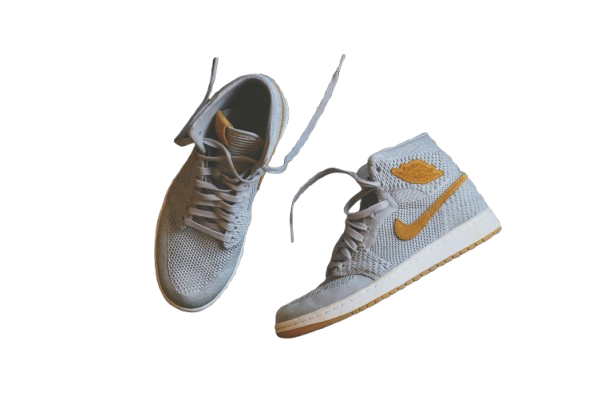

A startup idea inspired from Zomato. As we all know, currently we have a ton of footwear brands. But in this cluttered market there is no way we can compare all the trendy models and styles at one place,
this is where 'Get Your Pair' was born. Get Your Pair helps you to figure out the trendy styles all over the world. Not only styles, it also compares the proces from over 100 genuine retailers and
online sellers and help you find your best trade. Also it solves the major problem of authenticity. All the retailers and sellers we are linked with provide certificate of
authenticity under which they claim their authenticity and provide reward of 10x the original price if there authenticity is challanged.
Explore more

An Idea having a potential of being acknowledged by Scientific Committee. What we all think when someone say "Future", Yes we all think about robots. Future?? Even our present lives are highly robot dependent directly or indirectly
. But still in todays world , where Robots are capable of driving a car , still there are some small task robots can not accomplish which include from a basic task like picking an egg to a life saving task of
rescuing people in case of fire. This is all due to incompatabilty of robot arm to feel the things. And yes We are doing something that no one as ever thought of. We are doing a deep research on how a robotic arm can be replaced
by a octopus-like arm which would increase further gripping and integrating it with feel-the-force which is a part of another research. Though many research papers are made on the same but still no paper is cinsidered as of
now and we are trying to make one having potential to shape our coming future.
Let's Research
Traffic congestion is one of the biggest challenges in modern cities, causing wasted time, increased pollution, and stress for commuters. Traditional traffic lights operate on fixed timers, which often fail
to adapt to real-time traffic conditions. This is where our AI Traffic Lights comes into play .
Using real-time data from cameras and sensors, the system analyzes vehicle flow at intersections and dynamically adjusts signal timings to optimize traffic movement. The AI can detect congestion patterns, prioritize emergency vehicles, and reduce idle time a
t signals. Not only does this improve traffic efficiency, but it also contributes to reducing fuel consumption and carbon emissions.